Race world · 256 × 160 dish cells · 23 crystals · 16 paired seeds · 12 Nov 2026
Why the food-reach mould comes out in waves
You saw the food-reach settings on the big world shoot out in waves that touch the crystals but never join them up. Those settings are a droplet creature, and it can't make tubes. One walker a cell, blocked walkers that keep laying trail, and a wide sensor fan pull the walkers into round bodies. Grazing pushes each body off the ground it has eaten, so they all crawl outward at once. Nothing feeds a body or keeps it on a crystal. I named them "food reach" after a test that counted any trail touching a crystal once, which never checks whether the food stays joined.
The mould that explores and then joins food with tubes already exists: the Larder game's race start. It uses today's network rules and grows on the crystals it eats, starting from a small blob on the home crystal. A faint haze runs out first. The paths that meet crystals thicken into tubes, and the crystals become the mesh's nodes one after another. At 60 s it had more crystals joined to its main body than the droplets on 16 of 16 seeds (a median of 19 of 22, against 2).
Seed 1 · 90 s shown in 30 s
The same world, two moulds
Food-reach droplets
Crystals joined
2 at 5 s · 2 at 30 s · 3 at 60 s · 2 at 90 s
Crystals touched
all 22 by 2.3 s
7,500 walkers from a wide disc, no growth. Round bodies drift between the crystals and never link up.Race start (network + growth)
Crystals joined
4 at 5 s · 13 at 30 s · 14 at 60 s · 21 at 90 s
Walkers
5,000 → 1,740 at 5 s → 12,315 at 90 s
A loop round home first, then tubes out to the crystals. Crystals it eats fade as they run down.
The paired test · 16 seeds
Crystals on the main body
A crystal counts as joined when any of its cells is on the mould's main body, the largest connected piece of tube. Home is not counted, which leaves 22. I named the deciding measure before the run: joined at 60 s, race start against droplets, sign test.
Mould
15 s
30 s
60 s
90 s
Touched by 60 s
Touched and joined at 60 s
Droplets
2
2
2 (1–4)
2
352 / 352
40
Race start
12
15
19 (10–22)
21
351 / 352
278
Medians per seed, with the range at 60 s. More on 16 seeds, fewer on 0, p 0.00003, and the same at 90 s. Both moulds touch almost every crystal; only the race start holds them. Its main body is 0.98 of all its tube at 90 s, against 0.21 for the droplets.
Stills at 5, 30 and 90 s
Two seeds of each
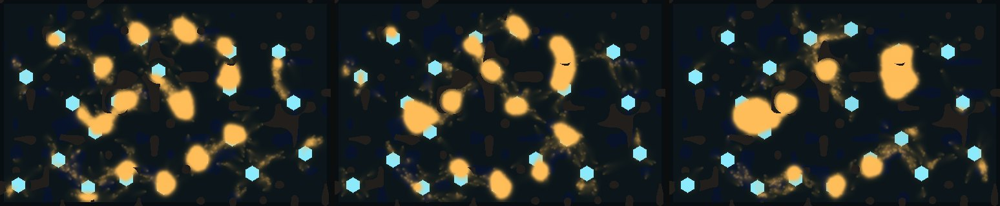
5 s30 s90 s
Droplets, seed 1
Joined
2 · 2 · 2 (5, 30, 90 s)
Main body / all tube
0.14 · 0.18 · 0.23
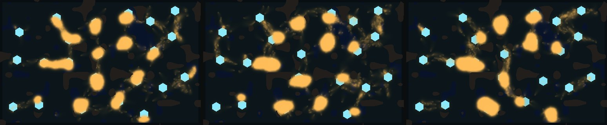
5 s30 s90 s
Droplets, seed 2
Joined
2 · 2 · 2
Main body / all tube
0.13 · 0.14 · 0.23
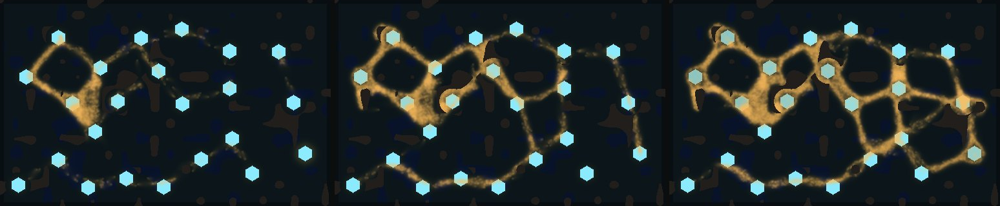
5 s30 s90 s
Race start, seed 1
Joined
4 · 13 · 21
Main body / all tube
0.73 · 0.85 · 0.99
Walkers
1,740 · 5,896 · 12,315
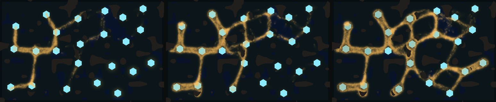
5 s30 s90 s
Race start, seed 2
Joined
8 · 13 · 16
Main body / all tube
0.90 · 0.95 · 0.82
Walkers
2,349 · 8,469 · 15,959
A branching tree of tubes from home, then loops across the rest of the world.Race start, seed 2, moving90 s shown in 30 s.Looks, seed 1 · not a census
Growth, the start, and two variants
The same world on seed 1 (three seeds for the counts in the text). Without growth the small start still sets out and makes tubes: 12, 15 and 14 crystals joined at 90 s on seeds 1 to 3, against 21, 16 and 11 with growth, so three seeds can't separate them. What growth adds you can see: the mould gets bigger as it eats and its mesh gets finer, where the fixed body keeps a few big loops. A start as dense as the GPU world's blob covers half the crystals at once, so it doesn't test spreading.
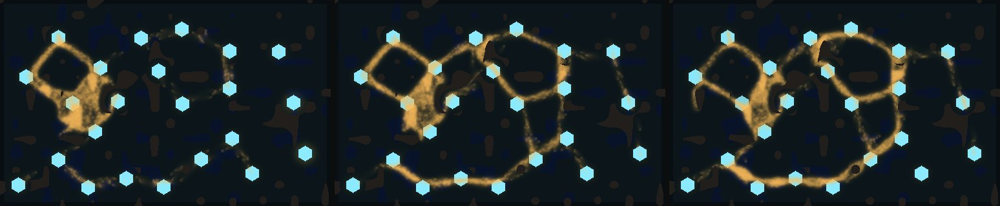
5 s30 s90 s
Small start, no growth
Joined
5 · 10 · 12 (5, 30, 90 s)
Walkers
5,000 fixed
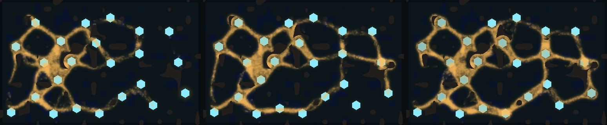
5 s30 s90 s
Dense start (25,000), growth
Joined
13 · 16 · 20
Walkers
8,462 · 11,078 · 16,484
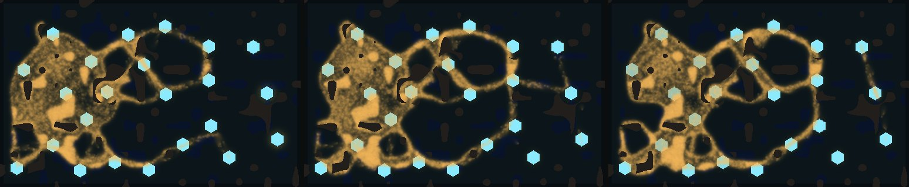
5 s30 s90 s
Dense start (25,000), no growth
Joined
15 · 18 · 18
A sheet stays at home and sends out big loops.
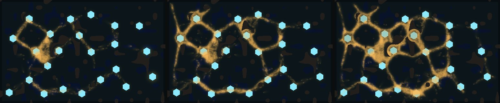
5 s30 s90 s
Race start + short explorer stage for newborns (explore_steps 30)
Joined
4 · 16 · 18
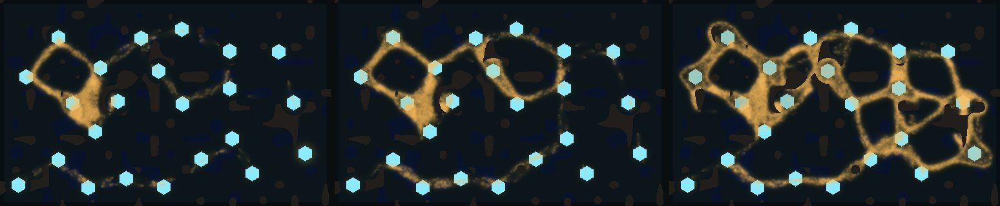
5 s30 s90 s
Race start + energy shared along the tubes (energy_flow 0.05, CPU only)
Joined
4 · 10 · 21
Thicker bodies on the food, joined by tubes.GTX 1070 · 2048 × 1280 world · seed 1 · 12 game minutes
In the big GPU world
The world in your video runs on a grid four times finer than the game's own world. There the race numbers don't carry over. As they are, the mould stays a knot at home, which is the blob you saw before. Once its trail sensors reach as far across the world as on the game's grid, it explores everything and builds thick tubes between some crystals, but most of its paths stay faint. Pictures are at the same game times as the stills above. "Touched" means any trail reached the crystal; joined isn't counted on the GPU yet.
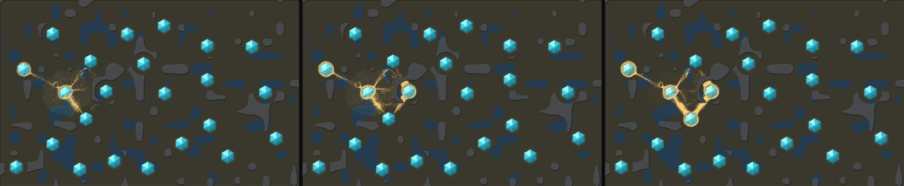
43 s239 s717 s
Race numbers as they are
Crystals touched
6 of 22, all by 20 s
Ground covered
1.4%
A knot at home with short tubes to its nearest crystals.
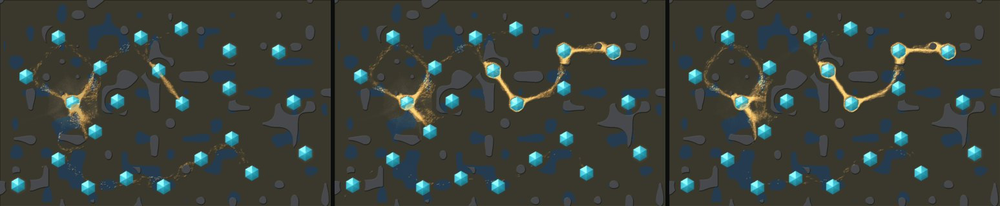
43 s239 s717 s
Trail sensors reaching as far as on the game's grid (reach 36)
Crystals touched
20 of 22
Ground covered
2.6%
Faint trails everywhere, and a chain of thick tubes across five crystals by about 3 game minutes.
Trail sensors reaching further, moving12 game minutes in 28 s.
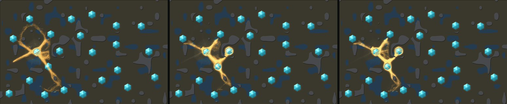
Also slower trail fade (keep 0.974)
Crystals touched
8 of 22
Thicker tubes, but they stay near home. With the other costs scaled down too it touched 8 and thinned out.
For the game
Pace and the GPU world
Pace in game time. The Larder game runs this world at 15 ticks a game second, and these runs at 120, so one second here is 8 game seconds. The haze touches every crystal in about a minute of game time. Half the crystals are joined by about two minutes, and it is still joining at twelve. The videos play at 24 game seconds a second.
On the GPU. The engine already runs this mould at the game's own grid: race_settings gives it the race world's numbers, and the Larder game plays on it, so the test above holds there.
For the big world video, either run the mould at the game's grid and draw it larger, or keep the finer grid with the longer trail sensors and accept a sparser network. A fine-grid mould as well joined as the game's needs its own tuning.
Cost. No new rule runs each tick. The race world took 5.6 to 7.0 ms a tick on one core as it grew; the droplets took 6.1 to 6.2.